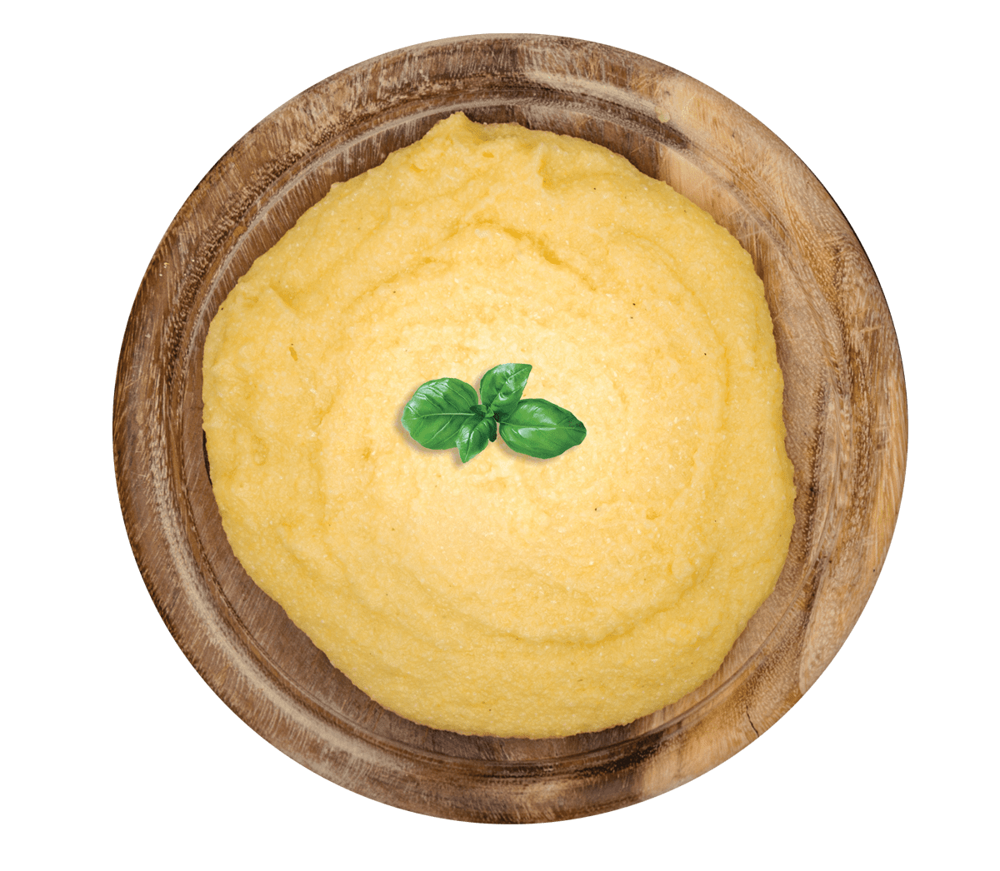

Polenta

Polenta is nothing more than coarsely ground cornmeal. The classic ratio is 1 part polenta to 4 parts water, but I like to measure the polenta just a little scant of a full cup. I often use chicken broth instead of water. It's a great base for any kind of saucy meat or mushroom ragout.>
Ingredients
- Water: You'll need about four cups of water for every cup of polenta.
- Salt: Don't forget to salt the water before adding the polenta!
- Polenta: Find it in the rice aisle at the grocery store.
- Butter: Three tablespoons of butter adds richness and moisture.
- Cheese: Freshly grated Parmigiano-Reggiano cheese takes this polenta over the top.
Directions
- Add the polenta to salted boiling water.
- Simmer until the polenta is slightly thick.
- Cover and continue cooking until the polenta is very thick.
- Stir in the butter and cheese.